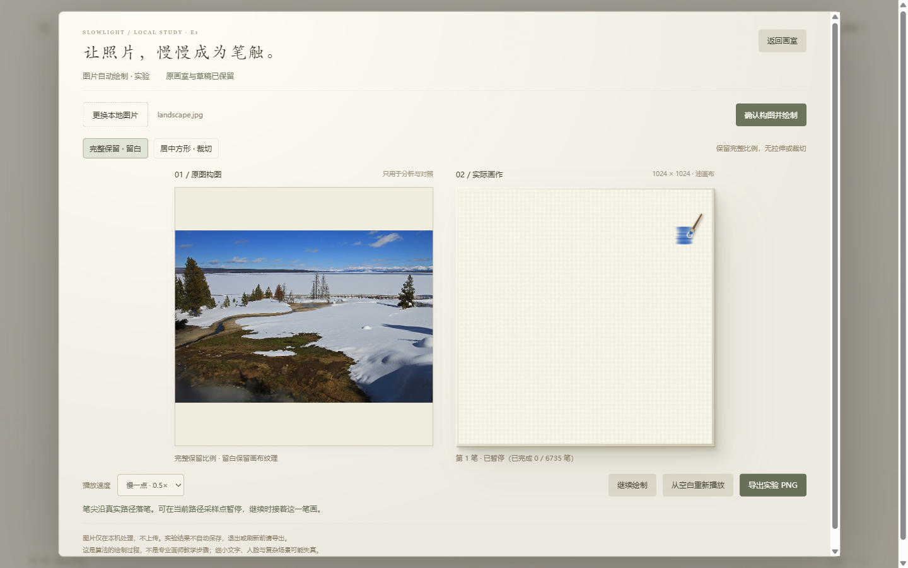

SLOWLIGHT / E1 · DETAIL & MOTION
同样的照片，更细的笔触。
这是新旧结果与真实过程的验收入口。要亲自选图，请进入画室，点击「图片自动绘制 · 实验」。自由绘画和旅行日落继续保留。
过程按局部颜色与轮廓，由大色块到小细节规划，再让一支笔沿真实路径逐点绘制。它尚未理解「树」「杯子」等对象结构；算法顺序不等于专业画师的创作步骤。
固定照片指纹与新参数 · 新旧状态及笔尖播放一致性检查 · 连续运行性能记录
同一张照片 · 同一随机种子
黄石冬景
NPS / Jim Peaco · 美国公共领域 · 来源与许可


留白不再布满刷痕，树群和前景边缘细节增加。细树枝、栅栏与雪地层次仍被概括，天空仍有水平笔痕。
本地规划 5.4 秒 · 绘制批次 p95 6.4 ms · 原生 1024 × 1024 · 颜色和高度独立重放一致
看五个阶段与真实逐笔过程


原速浏览器录像，含规划、笔尖落笔、阶段暂停和实际导出。图像不是预制成品揭幕；细小笔触在较快速度下可在一帧内完成。
同一张照片 · 同一随机种子
咖啡与白瓷杯
mcfoodie · CC0 1.0 · 来源与许可


杯口和杯碟的重划痕减弱，豆粒区域出现更多细笔。白瓷仍有纹路，豆粒的小结构尚不准确。
本地规划 10.0 秒 · 绘制批次 p95 5.6 ms · 原生 1024 × 1024 · 颜色和高度独立重放一致
看五个阶段与真实逐笔过程

原速浏览器录像，含规划、笔尖落笔、阶段暂停和实际导出。图像不是预制成品揭幕；细小笔触在较快速度下可在一帧内完成。
同一张照片 · 同一随机种子
夜间街景
Chris Spielmann / National Cancer Institute · 公共领域 · 来源与许可


保留街道、建筑和灯光的主要布局。车辆、人物、文字和细线仍明显失真，不能当作精细还原已经解决。
本地规划 7.3 秒 · 绘制批次 p95 6.5 ms · 原生 1024 × 1024 · 颜色和高度独立重放一致
看五个阶段与真实逐笔过程


{kind=link}
{kind=link}
{kind=link}
{kind=link}
{kind=link}
{kind=link}
{kind=link}
{kind=link}
{kind=link}
{kind=link}
{kind=link}
{kind=link}
原速浏览器录像，含规划、笔尖落笔、阶段暂停和实际导出。图像不是预制成品揭幕；细小笔触在较快速度下可在一帧内完成。
暂停在一笔中间，再接着画
笔尖显示实际执行位置；暂停后颜色和高度不动。导出当前进度不结束这笔，继续后最终结果保持一致。笔尖与参考图均不进入 PNG。
{kind=link}
